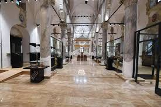
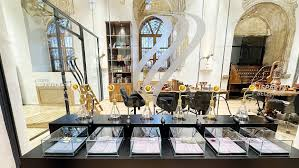
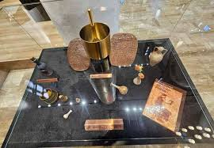

Misparta Koku Müzesi
Isparta Belediyesi tarafından restore edilen Aya Baniya (Aya Panaya) Kilisesi, 2025 yılında tamamlanarak Koku Müzesi ve Atölyesi işleviyle yeniden kente kazandırılmıştır. Dünyada beşinci, Türkiye’de ise ilk örnek olma özelliği taşıyan bu müze; koku kültürünün tarihsel gelişimine ışık tutan özgün bir merkez konumundadır. Müze koleksiyonunda; dünyanın bilinen ilk parfüm formülü, tarih boyunca kullanılan parfüm kapları, kokuya dair etnografik unsurlar ve kilise yapısından elde edilen arkeolojik buluntular sergilenmektedir. Atölye bölümünde ise ziyaretçilere, kokunun tarihsel serüveninden parfüm yapım sanatına uzanan bir perspektif sunulmaktadır. Antik Çağ’dan günümüze kokular üzerine aktarılan bilgiler, aromaterapi uygulamaları ve kişiye özel parfüm tasarımı eğitimleri aracılığıyla deneyimleyici bir öğrenme ortamı oluşturulmaktadır. “Yaşayan Müze” anlayışıyla konumlandırılan MİSPARTA Koku Medeniyeti, yıllık etkinlik programları kapsamında koku temalı sergilere, konferanslara ve panellere ev sahipliği yaparak, bu alanda ulusal ve uluslararası ölçekte bilimsel ve kültürel bir merkez olmayı hedeflemektedir..


